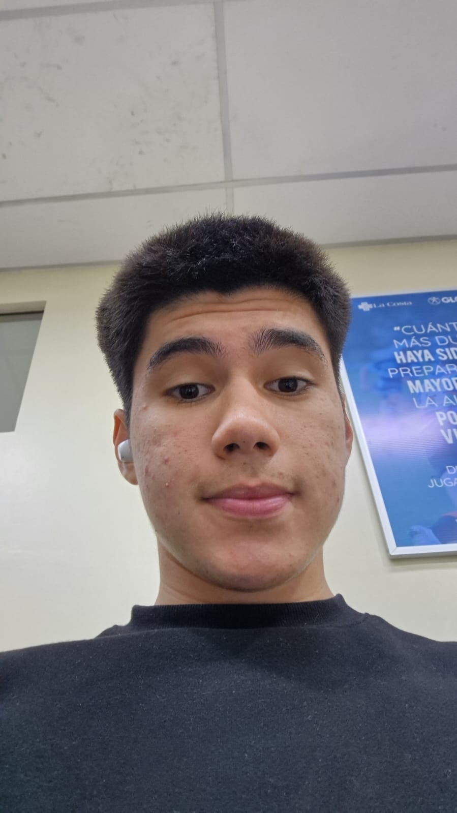
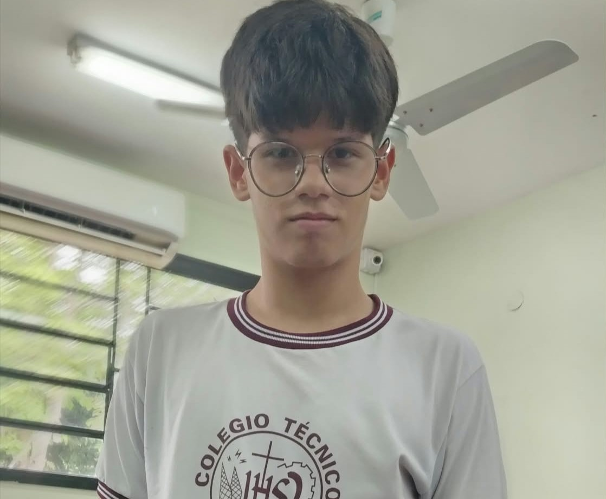

Mi experiencia fue muy buena, disfruté mucho compartir con los niños del 4to grado, jugar fútbol y realizar juegos de líderes y dinámicas educativas. Los niños fueron muy buenos con nosotros y nos recibieron muy bien. Aunque tuvimos algunas dificultades para explicar las actividades, pudimos realizarlas y pasar un buen momento juntos. También me hizo reflexionar sobre las condiciones en las que viven, lo que me puso un poco triste. A pesar de eso, me voy feliz por haber compartido con ellos y haberles brindado un momento de alegría. Creo que eso fue lo más lindo de toda la experiencia.

Tiziano Garozzo
Mi experiencia: La verdad es que disfruté muchísimo el tiempo que pasé en el Bañado Sur con los niños. Conocer de cerca su día a día y las realidades que les toca pasar me hizo pensar mucho, y me hubiese encantado haberme quedado más tiempo con ellos. Aprendí muchísimo de esa visita, sobre todo que, a pesar de las situaciones difíciles que se presenten, nunca tenemos que dejar de ser quienes somos.
Nicole Paredes
Mi experiencia fue genial, a mí me pareció un lugar donde todos eran buenos y graciosos porque, aunque tuvimos que practicar mucho con los chicos, lograron cumplir con todas las actividades que les propusimos. Espero que algún día volvamos a visitar el colegio para volver a vivir esta experiencia fantástica.
Sebastian Diaz
Mi experiencia fue muy buena, me encantó compartir con los chicos, jugar con ellos y realizar actividades de matemática. Aunque al principio nos costó organizarnos porque era nuestra primera vez dirigiendo una clase, poco a poco fuimos aprendiendo. También fue triste ver las condiciones en las que vivían y estudiaban, algo que me hizo reflexionar mucho. A pesar de eso, me quedo con los buenos momentos compartidos y con la alegría de haber podido pasar tiempo con ellos.
